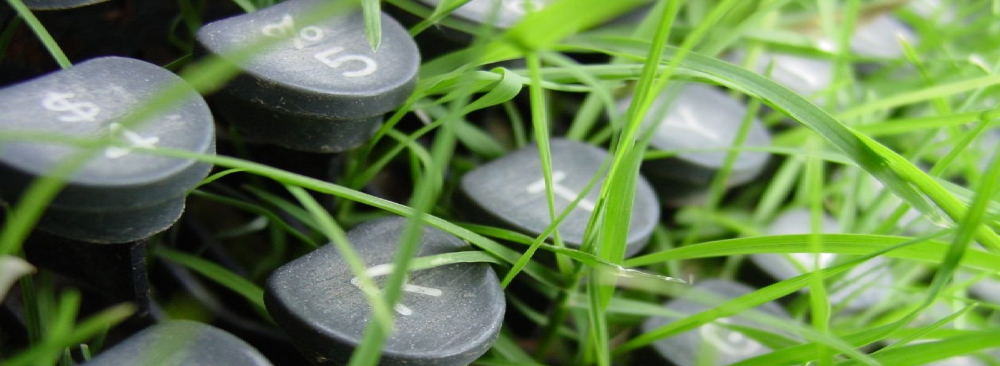

Tecnologias Green IT: Inovação a Favor do Meio Ambiente
O Futuro Sustentável da Tecnologia
A tecnologia avança rapidamente, mas o custo ambiental dessa evolução é um desafio crescente. A ideia do Green IT surge como uma solução, propondo formas de tornar a tecnologia mais eficiente e menos agressiva ao meio ambiente.
O que é Green IT?
Green IT (ou TI Verde) refere-se ao uso de tecnologia de forma sustentável, com foco na redução do impacto ambiental. Isso inclui desde data centers com menor consumo de energia até o descarte responsável de equipamentos eletrônicos.

Exemplos de soluções Green IT:
Virtualização de servidores: Reduz o número de máquinas físicas necessárias, economizando energia e espaço.
Cloud Computing: Computação em nuvem diminui a necessidade de infraestrutura local e otimiza recursos.
Hardware eficiente: Novos dispositivos são projetados para consumir menos energia sem perder desempenho.
Data Centers Sustentáveis: Data centers modernos utilizam sistemas de refrigeração avançados, energias renováveis e gestão inteligente de energia para reduzir sua pegada de carbono.
Por que Adotar Green IT?
Redução de Custos Operacionais
- Menor consumo de energia significa economia direta para empresas e indivíduos.
- A otimização de recursos reduz a necessidade de novos investimentos em infraestrutura.
Responsabilidade Ambiental
- Empresas que adotam práticas de Green IT mostram comprometimento com a sustentabilidade, ganhando a confiança de consumidores e parceiros.
- Contribui para a redução de emissões de gases de efeito estufa, alinhando-se aos esforços globais contra as mudanças climáticas.
Inovação Competitiva
- Green IT incentiva a criação de soluções tecnológicas mais inteligentes, posicionando empresas à frente no mercado.
Conclusão
Investir em Green IT não é apenas uma escolha inteligente; é uma necessidade urgente para preservar os recursos do planeta. Ao integrar inovação tecnológica e responsabilidade ambiental, construímos um futuro mais sustentável para todos.🌱